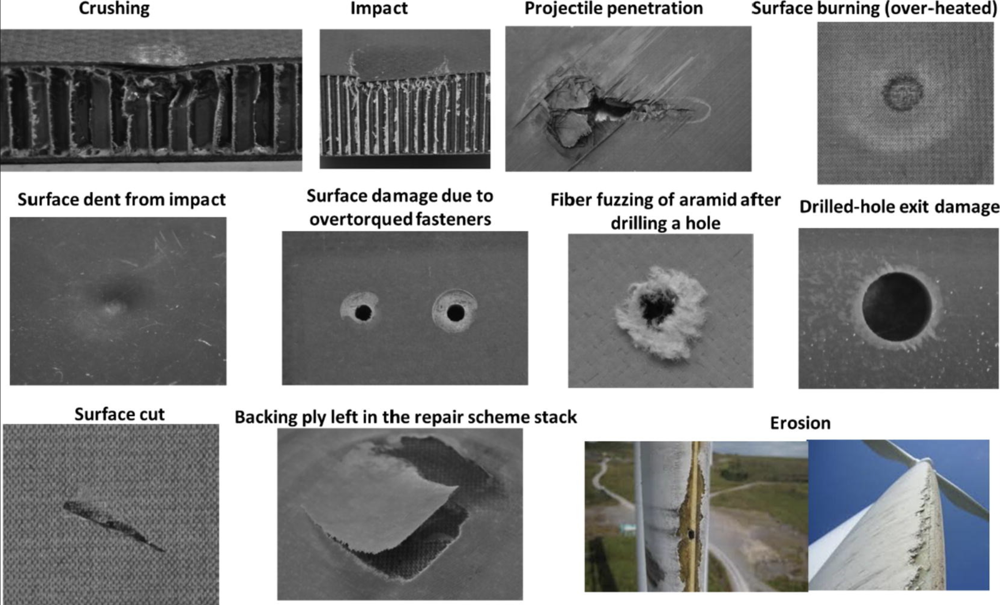
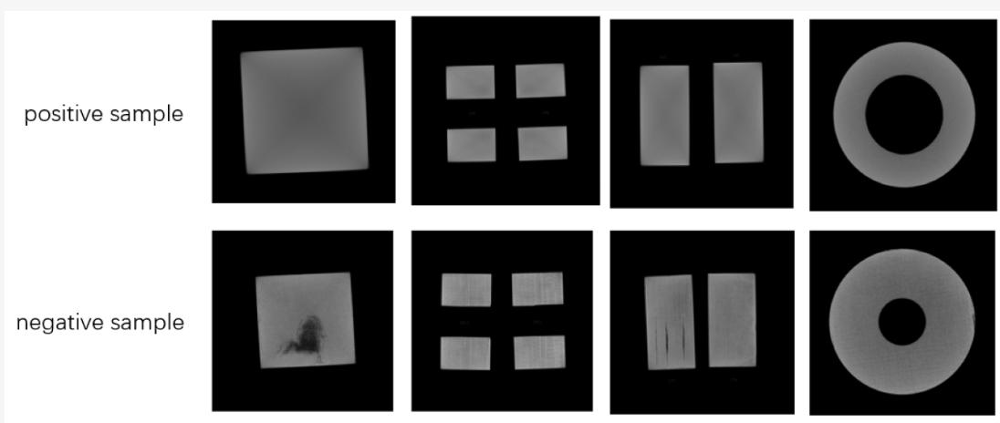

This project was developed to detect, classify, and address anomalies within composite manufacturing processes. Leveraging both imaging and sensor-based data, the system aims to proactively identify micro-level defects that compromise material integrity. By analyzing real-time feedback on production lines, it allows for immediate intervention and timely corrective actions. Ultimately, this approach reduces downtime, prevents material wastage, and ensures consistent product quality.
We began with a modular sensor array equipped with computer vision, thermal imaging, and ultrasound detection capabilities. Early prototypes were tested on small-scale manufacturing lines to refine fault identification and pinpoint parameters that accurately signal defects. We iterated on both hardware and software to ensure robust, real-time data capture and analytics. A simple dashboard interface was introduced to highlight fault locations and guide prompt corrective measures.
To implement the model, the following shows the breakdown of features that were initially proposed and what were eventually implemented in the application:
Defect Detection Framework
Faults in Composite Manufacturing
Composite Material Image Dataset